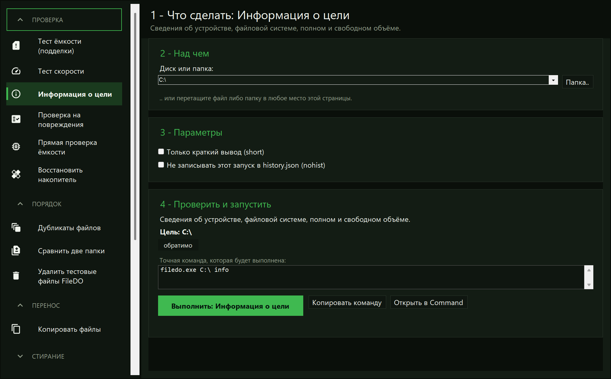
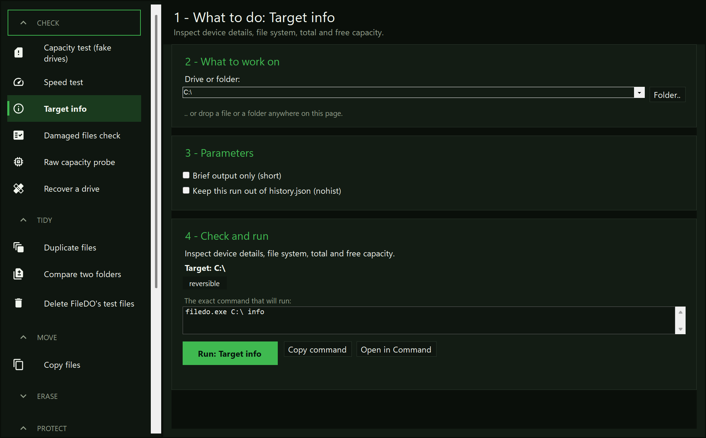
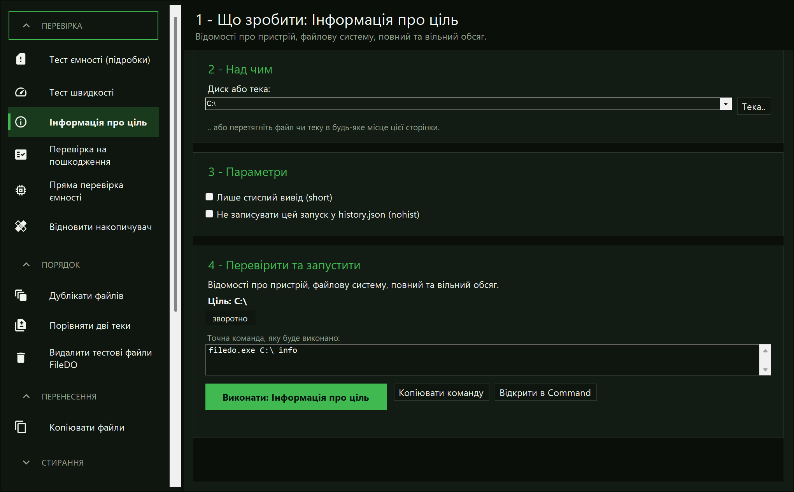
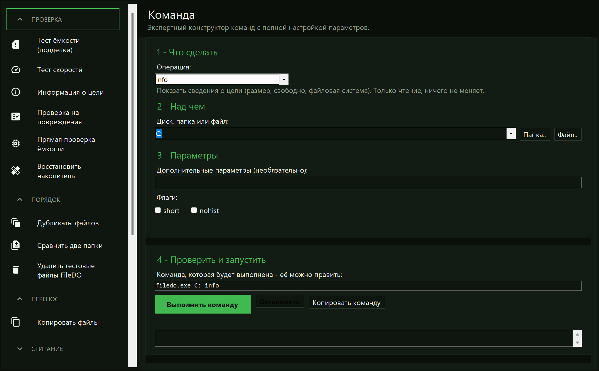
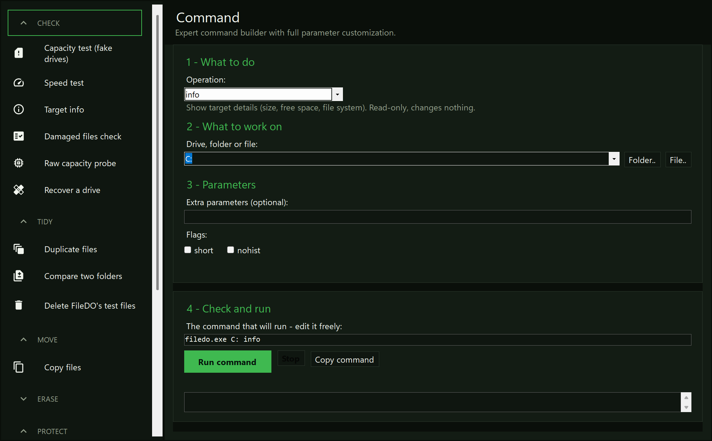

Руководство · FileDO GUIGuide · FileDO GUIПосібник · FileDO GUI
Выберите задачу, пройдите её страницу, проверьте и только потом
запустите.Pick the job, work through its page, check, then run.Виберіть завдання, пройдіть його сторінку, перевірте та лише потім
запустіть.
FileDO GUI - это окно Windows для тех же команд FileDO. По
умолчанию открывается оболочка: слева список задач, а на каждую
задачу - своя пронумерованная страница: над чем работать, какие
параметры, затем проверка и запуск. Окно не меняет правила
безопасности: оно делает цель, операцию и команду видимыми до
запуска.FileDO GUI is the Windows window for the same FileDO commands. It
opens on a shell: a rail of jobs down the left side and one
numbered page per job - what to work on, which parameters, then
check and run. It does not change safety rules: it makes the
target, the operation, and the command visible before
execution.FileDO GUI - це вікно Windows для тих самих команд FileDO. За
замовчуванням відкривається оболонка: ліворуч список завдань, а на
кожне завдання - своя пронумерована сторінка: над чим працювати,
які параметри, потім перевірка та запуск. Вікно не змінює правил
безпеки: воно робить ціль, операцію та команду видимими перед
запуском.
Когда выбрать GUIWhen to choose the GUIКоли вибрати GUI
Удобнее выбрать задачуYou prefer to pick a jobЗручніше вибрати завдання
Выберите задачу в списке слева и заполните её страницу вместо
ручного ввода всех аргументов.Choose the job in the rail and fill in its page instead of
typing every argument.Виберіть завдання у списку ліворуч і заповніть його сторінку
замість ручного введення всіх аргументів.
Нужно проверить путьYou need to verify a pathТреба перевірити шлях
Каждая страница начинается с того, над чем работать, и
заканчивается проверкой - цель у вас перед глазами до
запуска.Every page starts with what to work on and ends with a check,
so the target is in front of you before you run.Кожна сторінка починається з того, над чим працювати, і
закінчується перевіркою - ціль перед очима до запуску.
Нужна команда для инструкцииYou need a command for an instructionПотрібна команда для інструкції
Страница «Команда» показывает командную строку: её можно
отредактировать, скопировать в буфер или запустить.The Command page shows the command line: it can be edited,
copied, or run.Сторінка «Команда» показує командний рядок: його можна
відредагувати, скопіювати або запустити.
Что-то работает не такSomething behaves wronglyЩось працює не так
Страница «О программе» показывает версию, ссылки и кнопку
«Отправить логи автору» (в старом окне это кнопка «О программе»
справа сверху): логи собираются в
один zip, папка с ним открывается, путь копируется в буфер
обмена, а ваша почтовая программа открывается с адресом автора и
темой. Приложить архив и отправить письмо - ваш шаг: сам FileDO
ничего никуда не передаёт.The About page shows the build, the links, and a Send logs to
the author button (in the older window, the About button in the
top right): the logs are
packed into one zip, the folder opens with it selected, the path
goes to the clipboard, and your mail program opens with the
author's address and a subject. Attaching the archive and sending
the mail is your step - FileDO itself transmits nothing.Сторінка «Про програму» показує версію, посилання та кнопку
«Надіслати логи автору» (у старому вікні це кнопка «Про
програму» праворуч угорі): логи збираються в
один zip, тека з ним відкривається, шлях копіюється в буфер
обміну, а ваша поштова програма відкривається з адресою автора та
темою. Прикласти архів і надіслати лист - ваш крок: сам FileDO
нічого нікуди не передає.
Первый безопасный запускFirst safe runПерший безпечний запуск
Запустите filedo_win из winget/Store-пакета либо
filedo_win.exe рядом с filedo.exe в
portable ZIP. Откроется оболочка со списком задач слева.Start filedo_win from the winget/Store package, or
filedo_win.exe beside filedo.exe in the
portable ZIP. The shell opens with the rail of jobs on the
left.Запустіть filedo_win із пакета winget/Store або
filedo_win.exe поруч із filedo.exe у
portable ZIP. Відкриється оболонка зі списком завдань
ліворуч.
Для первой проверки выберите «Информация о цели» и укажите, над
чем работать.For a first check, choose Target info and set what to work
on.Для першої перевірки виберіть «Інформація про ціль» і вкажіть,
над чим працювати.
Прочитайте шаг «Проверить и запустить», затем запустите. Задача
«Информация о цели» только показывает сведения.Read the Check and run step, then run it. Target info only shows
information.Прочитайте крок «Перевірити та запустити», потім запустіть.
Завдання «Інформація про ціль» лише показує відомості.
filedo_win



«Информация о цели»: шаг 4 показывает цель и точную команду до
запуска.Target info: step 4 shows the target and the exact command before
anything runs.«Інформація про ціль»: крок 4 показує ціль і точну команду до
запуску.
Что показывает окноWhat the window exposesЩо показує вікно
Список слева перечисляет задачи, и каждая задача открывает одну
пронумерованную страницу: над чем работать, какие параметры, затем
проверка и запуск. Есть страницы для теста ёмкости, теста
скорости, сведений о цели, проверки повреждённых файлов, прямой
проверки ёмкости, восстановления накопителя, дубликатов, сравнения
двух папок, заполнения свободного места, копирования файлов и
затирания папки; рядом - страницы защиты, «История», «Настройки» и
«О программе». Все параметры, которые CLI принимает для задачи,
есть на её странице.The rail lists the jobs, and each job opens one numbered page: what
to work on, which parameters, then check and run. There are pages
for a capacity test, a speed test, target info, a damaged-files
check, a raw capacity probe, recovering a drive, duplicate files,
comparing two folders, filling the free space, copying files, and
wiping a folder; the Protect pages, History, Settings, and About sit
beside them. Every option the CLI takes for a job is on its
page.Список ліворуч перелічує завдання, і кожне завдання відкриває одну
пронумеровану сторінку: над чим працювати, які параметри, потім
перевірка та запуск. Є сторінки для тесту ємності, тесту швидкості,
відомостей про ціль, перевірки пошкоджених файлів, прямої перевірки
ємності, відновлення накопичувача, дублікатів, порівняння двох тек,
заповнення вільного місця, копіювання файлів і затирання теки;
поруч - сторінки захисту, «Історія», «Налаштування» та «Про
програму». Усі параметри, які CLI приймає для завдання, є на його
сторінці.


Страница «Команда»: операция, цель, флаги и сама командная строка,
которую можно править.The Command page: operation, target, flags, and the command line
itself, editable.Сторінка «Команда»: операція, ціль, прапорці й сам командний
рядок, який можна редагувати.
Экспертный конструктор: все операции, которые принимает
filedo.exe, с флагами и выбором правил, относящимися
к выбранной операции, и самой командной строкой, которую можно
править внизу. Прочитайте её, отредактируйте вручную, скопируйте
или запустите.The expert builder: every operation filedo.exe
takes, with the flags and rule pickers that belong to the one
you choose, and the command line itself editable underneath.
Read it, edit it by hand, copy it, or run it.Експертний конструктор: усі операції, які приймає
filedo.exe, із прапорцями та вибором правил, що
стосуються вибраної операції, і самим командним рядком, який
можна редагувати внизу. Прочитайте його, відредагуйте вручну,
скопіюйте або запустіть.
Операции, которым нужен пароль, получают здесь отдельное
скрытое поле, а secure спрашивает его дважды.
Пароль не попадает в командную строку: в ней только
pe:FILEDO_SHELL_CRED - имя переменной, через
которую он передаётся запуску. secure, который
удаляет или перезаписывает оригинал, отсюда требует ещё и
-y; без него оригинал сохраняется, и запуск об этом
сообщает.Operations that need a password get a masked field of their own
here, and secure asks twice. The password never
enters the command line: the line carries only
pe:FILEDO_SHELL_CRED, the name of the variable that
passes it to the run. A secure that deletes or
overwrites the original also needs -y from here;
without it the original is kept and the run says so.Операції, яким потрібен пароль, отримують тут окреме приховане
поле, а secure питає його двічі. Пароль не потрапляє
в командний рядок: у ньому лише
pe:FILEDO_SHELL_CRED - ім’я змінної, через яку він
передається запуску. secure, що видаляє або
перезаписує оригінал, звідси потребує ще й -y; без
нього оригінал зберігається, і запуск про це повідомляє.
Три страницы: сделать файл секретным, вернуть оригинал и
открыть секретный файл, не распаковывая его. Пароль скрыт и при
упаковке вводится дважды; пустой пароль принимается и означает
лишь маскировку, без секретности.Three pages make a file secret, get the original back, and open
a secret file without unpacking it. The password is masked and
typed twice when packing; an empty password is accepted and
means obfuscation only, with no secrecy.Три сторінки: зробити файл секретним, повернути оригінал і
відкрити секретний файл, не розпаковуючи його. Пароль приховано,
і під час пакування його вводять двічі; порожній пароль
приймається й означає лише маскування, без секретності.
Что будет с оригиналом, выбирается до запуска: оставить (по
умолчанию), удалить или перезаписать и удалить. Только последний
вариант требует набрать WIPE. Открытие контейнера
запускает работу, которая длится ровно столько, сколько
существует открытая копия; кнопка «Убрать копию сейчас» её
завершает.What happens to the original is chosen before anything runs:
keep (the default), delete, or overwrite then delete. Only the
last one asks you to type WIPE. Opening a container
starts a run that lasts exactly as long as the plaintext copy
exists; the Remove the copy now button ends it.Що буде з оригіналом, вибирається до запуску: залишити (за
замовчуванням), видалити або перезаписати й видалити. Лише
останній варіант вимагає набрати WIPE. Відкриття
контейнера запускає роботу, яка триває рівно стільки, скільки
існує відкрита копія; кнопка «Прибрати копію зараз» її
завершує.
Та же ответственностьSame responsibilityТа сама відповідальність
GUI не делает wipe, fill … del или
режимы удаления обратимыми. Перед запуском проверьте цель и
команду; для необратимых действий сделайте резервную копию.
«Прямая проверка ёмкости» и «Восстановить накопитель» помечены
как разрушающие и просят права администратора; «Затереть папку»
по-прежнему требует набрать WIPE и отметить -y, а
корень диска, общую папку или TEMP отправляет в консоль.The GUI does not make wipe, fill … del,
or deletion modes reversible. Check the target and the command
before you run; back up before irreversible actions. Raw capacity
probe and Recover a drive are marked destructive and ask for
Administrator; Wipe a folder still needs WIPE typed
out and -y ticked, and sends a drive root, a share or TEMP to the
console.GUI не робить wipe, fill … del або
режими видалення зворотними. Перед запуском перевірте ціль і
команду; перед незворотними діями зробіть резервну копію. «Пряма
перевірка ємності» та «Відновити накопичувач» позначені як
руйнівні й просять права адміністратора; «Затерти теку»
як і раніше вимагає набрати WIPE і позначити -y, а
корінь диска, спільну теку чи TEMP відправляє в консоль.
Как запустить окноWays to start the windowЯк запустити вікно
На файлеOn a fileНа файлі
Двойной щелчок по файлу .fd-sec открывает окно
прямо на этом контейнере. Из командной строки то же самое даёт
filedo_win.exe C:\a\secret.fd-sec. Каждый
контейнер получает своё окно.A double-click on a .fd-sec file opens the window
on that container. From a command line, the same thing is
filedo_win.exe C:\a\secret.fd-sec. Each container
gets its own window.Подвійний клік по файлу .fd-sec відкриває вікно
прямо на цьому контейнері. З командного рядка те саме дає
filedo_win.exe C:\a\secret.fd-sec. Кожен контейнер
отримує своє вікно.
С журналом отладкиWith a debug logІз журналом налагодження
Окно всегда записывает свои ошибки в
%LOCALAPPDATA%\FileDO\filedo_win.log - этот файл
и уходит автору по кнопке «Отправить логи». Переключатель
-debug добавляет туда подробные строки.The window always writes its errors to
%LOCALAPPDATA%\FileDO\filedo_win.log - the file
Send logs passes to the author. The -debug switch
adds detailed lines to it.Вікно завжди записує свої помилки в
%LOCALAPPDATA%\FileDO\filedo_win.log - саме цей
файл іде авторові за кнопкою «Надіслати логи». Перемикач
-debug додає туди докладні рядки.